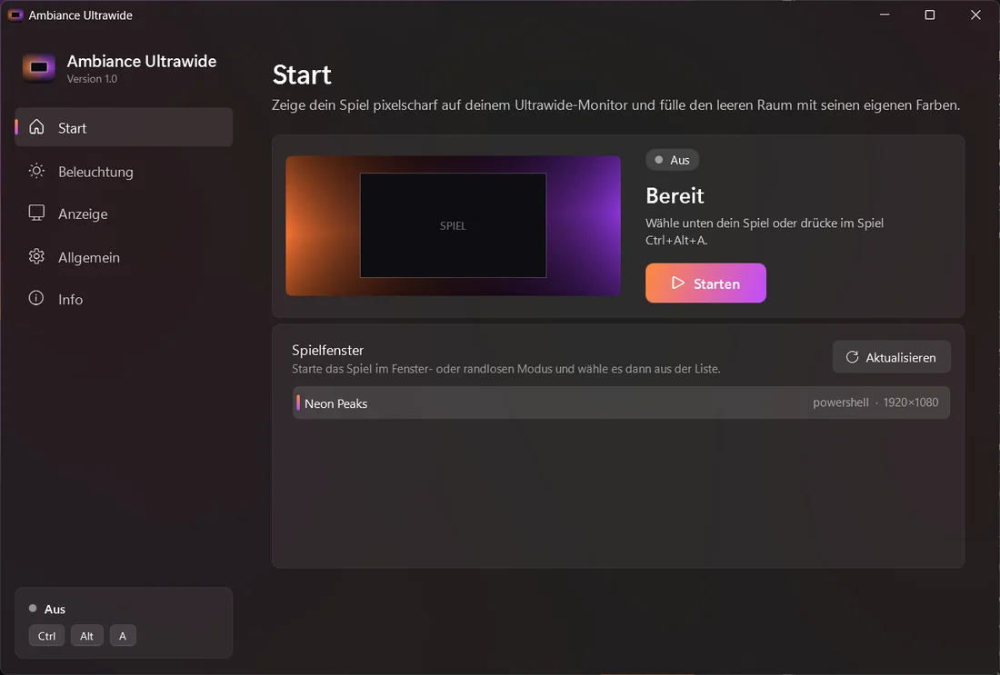
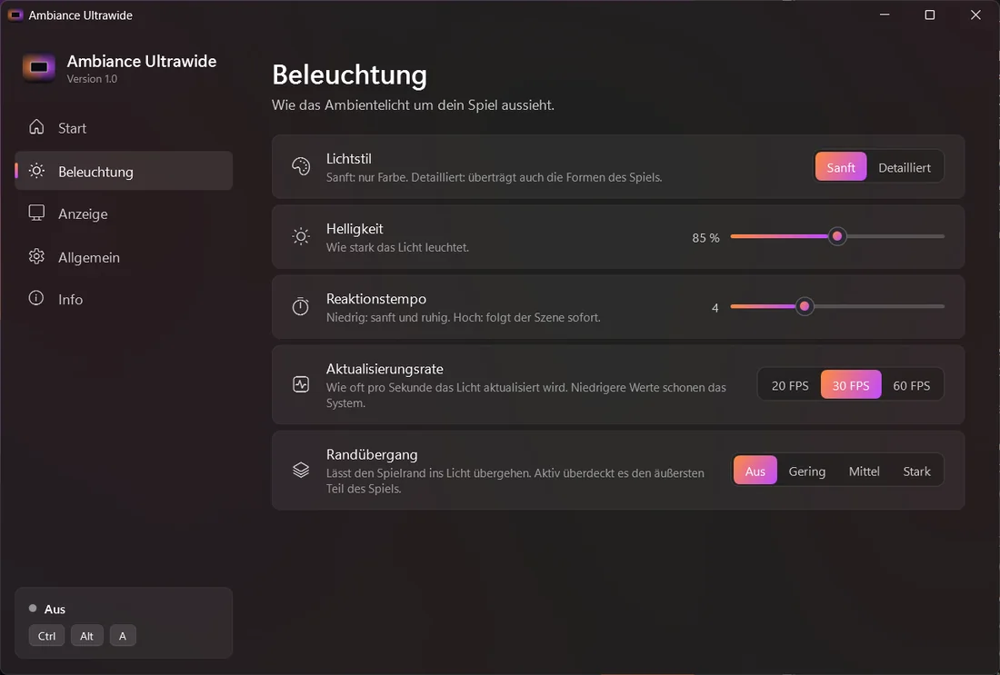

Ambiance Ultrawide
Scharfe Spiele. Ambientelicht. Gemacht für Ultrawide.
Gestochen scharfe Spiele auf Ultrawide-Monitoren, dazu Ambientelicht aus den Farben des Spiels. Keine FPS-Kosten, etwa 1 % CPU.
Kostenlos · Open Source · Windows 10/11 · 12 Sprachen

Das Spiel bleibt scharf, der leere Raum leuchtet im eigenen Licht
Schluss mit unscharfer Auflösung
Links: Windows-Auflösung gesenkt. Rechts: Ambiance Ultrawide.


Bildschirm füllen ohne FPS-Verlust
Das Spiel rendert dieselben Pixel, Windows zeigt sie größer an

Sanftes oder detailliertes Licht
Ein ruhiges Farbleuchten oder eines mit den Formen des Spiels

Spiel wählen, Starten klicken
Oder im Spiel Strg+Alt+A drücken

Licht nach deinem Geschmack
Stil, Helligkeit, Reaktionstempo und Aktualisierungsrate

Funktionen
GPU-Erfassung, etwa 1 % CPU. Kein Zugriff auf den Spielspeicher.
- Ambientelicht aus den Farben deines Spiels
- Scharfes Bild ohne Unschärfe durch niedrige Auflösung
- Entfernt Fensterränder, skaliert und zentriert das Spiel
- Bildschirm füllen ohne FPS-Verlust
- GPU-Erfassung, etwa 1 % CPU
- Lichtstile Sanft und Detailliert
- Einstellungen für Helligkeit, Reaktion und Rate
- Kein Zugriff auf Spielspeicher, keine Datensammlung
Über die App
Wer die Windows-Auflösung senkt, um auf einem Ultrawide-Monitor in niedrigerer Auflösung zu spielen, bekommt ein unscharfes Bild. Ambiance Ultrawide löst dieses Problem.
Es zeigt dein Spiel in einem Fenster – Pixel für Pixel und ohne Unschärfe – und füllt den leeren Raum an den Seiten mit Ambientelicht aus den Farben des Spiels, wie die Ambientebeleuchtung eines Fernsehers. Statt schwarzer Balken siehst du ein sanftes Leuchten, das die Atmosphäre des Spiels fortsetzt.
Auf Wunsch vergrößert Ambiance Ultrawide das Bild mit der Windows-Bildschirmlupe bis zum Bildschirmrand. Das Spiel rendert weiterhin dieselbe Pixelzahl, du verlierst also keine FPS.
Ambiance Ultrawide ist sehr leicht. Es erfasst den Bildschirm über die Grafikkarte und belastet die CPU kaum. Es greift nie auf Speicher oder Dateien deiner Spiele zu, sondern liest nur, was auf dem Bildschirm zu sehen ist. Es sammelt keine Daten und stellt keine Internetverbindung her.
So geht's: Starte dein Spiel im Fenster- oder randlosen Modus, wähle es in Ambiance Ultrawide aus und klicke auf Starten. Oder drücke im Spiel Strg+Alt+A. Strg+Alt+Z schaltet die Vergrößerung um.
Oberfläche in 12 Sprachen. Kostenlos und Open Source.